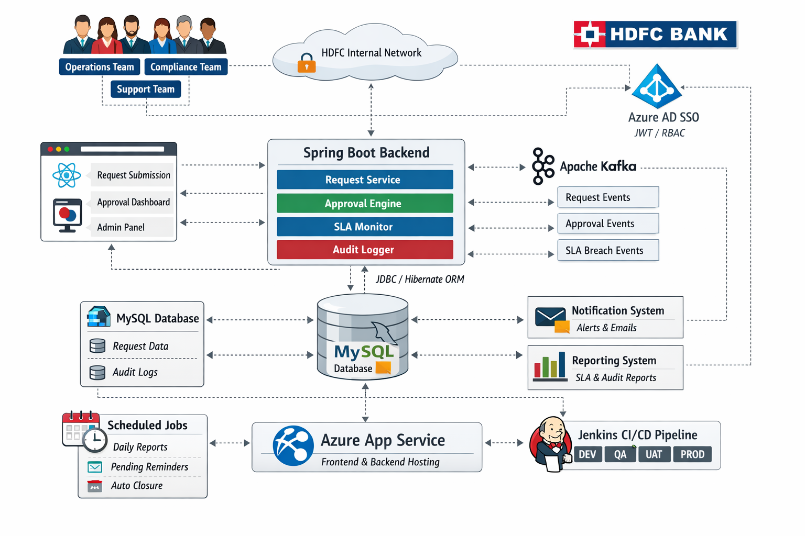

Architecture

Problem → Decision → Trade-off → Result
Problem
- Manual approvals with limited tracking
- No centralized SLA visibility
- Need strong access control and audit trail
Decision
- React UI with reusable components (tables, filters, pagination)
- Spring Boot APIs with Azure AD JWT-based SSO
- RBAC via roles/groups/claims
- Kafka events for workflow notifications and status updates
- MySQL + Hibernate with indexing and pagination
Trade-offs
- Kafka adds operational complexity, but decouples services and scales notifications
- Claims-based RBAC requires IAM coordination and careful token design
Result
- Improved approval turnaround and visibility
- Secure role-based access and complete auditability
- Scalable event-driven notification pattern
Tech Stack
Frontend
React, reusable components, server-side pagination
Backend
Java, Spring Boot, Spring Security, REST
Auth
Azure AD SSO, JWT, RBAC (claims)
Integration
Kafka events for notifications